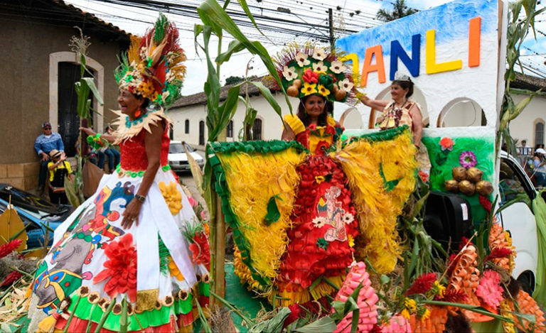

Bienvenidos a Danlí
Descubre la belleza de la Ciudad de las Colinas
Descubre la belleza de la Ciudad de las Colinas
Danlí fue fundada por el Padre Franciscano Fernando Espino en 1667 con el nombre de San Buenaventura. En este sitio, construyó una iglesia para catequizar a los indígenas de la región. Poco tiempo después, bautizó la comunidad con el nombre de Danlí.
Según otras fuentes, Danlí fue fundada entre los años 1676 y 1678, por los hermanos Pedro y Alonso Ortiz de Fúnez, quienes heredaron una estancia poblada en tierras "sueltas" (sin dueño), llamada Danlí. Los hermanos tuvieron el deseo de legalizar las tierras con la Corona Española, a seis tostones por caballería. La venta del sitio se legalizó en 1679, y en 1690 ya se menciona la existencia de torres de vigilancia y de una población en crecimiento.
En 1791, Danlí aparece como cabecera del Curato, y en 1794, el territorio de Danlí fue delimitado. Durante la división territorial de 1825, Danlí pasó a ser una parroquia del Partido de Olancho.
El 12 de abril de 1843, Danlí recibió el título de ciudad, un honroso reconocimiento que compartió con otras ciudades importantes de Honduras. En 1869, al crearse el departamento de El Paraíso, Danlí pasó a formar parte de este. En el censo de 1887, la población de Danlí era de 6,743 habitantes.
Danlí fue visitada por el famoso explorador francés Alphonse Pinart en 1896, quien hizo importantes descubrimientos paleontológicos en la región. En 1950, la población de Danlí había crecido a 16,449 habitantes.
En 1983, durante la gestión de Santiago Montoya Vega, se celebró el 150 aniversario del título de ciudad, y en 2002, la Casa de la Cultura conmemoró el 159 aniversario. Hoy en día, Danlí se distingue como un importante centro productor de maíz, siendo conocida como la "Ciudad de las Colinas" debido a su ubicación entre cerros de verde pinar.
Parroquia Inmaculada Concepción
Finca Santa Emilia

Cerro de la Cruz
Danlí es famoso por su festival del maíz y las actividades culturales que unen a la comunidad. El Festival Internacional del Maíz, que se celebra en la Ciudad de las Colinas desde 1977, es el evento más emblemático de la ciudad y refleja el valor agrícola de la región.
Este festival nació en un contexto histórico en el que Danlí era conocida como el "Granero de Centroamérica", un reconocimiento a su riqueza agrícola, especialmente en la producción de maíz. El Festival fue creado para honrar esa tradición y fomentar el trabajo de los agricultores y campesinos locales.
Durante este evento, los asistentes tienen la oportunidad de disfrutar una deliciosa variedad de platos típicos elaborados a base de maíz, como tamalitos de elote, montucas, güirilas, atol, fritas, nacatamales, elotes cocidos y las inigualables rosquillas de maíz. Este festín culinario es solo una parte de lo que convierte al Festival del Maíz en un evento único.
El festival no solo celebra la gastronomía, sino también la cultura local, con una serie de actividades familiares que incluyen:
Cada año, el festival atrae a miles de visitantes, quienes se sienten cautivados por la hospitalidad y la riqueza cultural de la región. En sus tierras fértiles, las milpas de maíz producen los granos que se convierten en el corazón de este gran evento, simbolizando el vínculo profundo entre Danlí y su tierra.